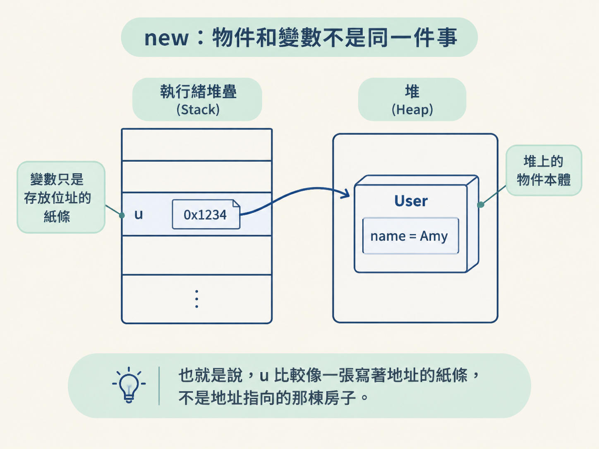
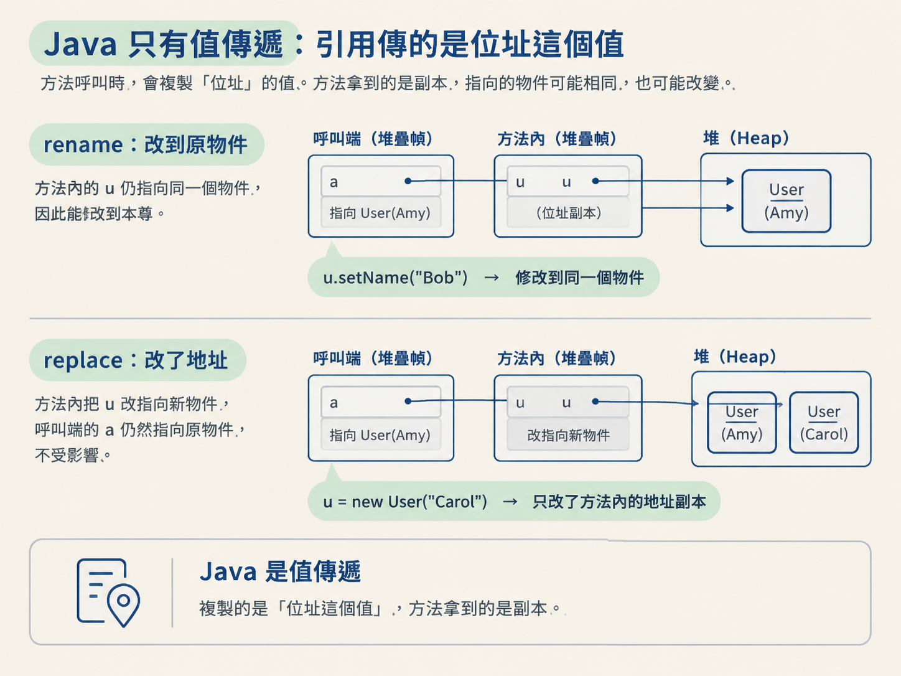
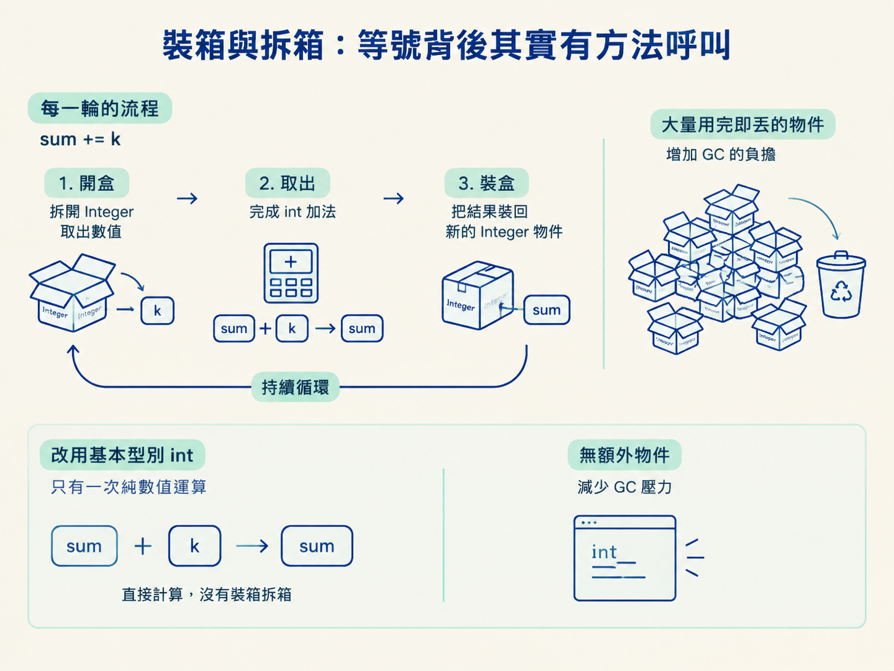
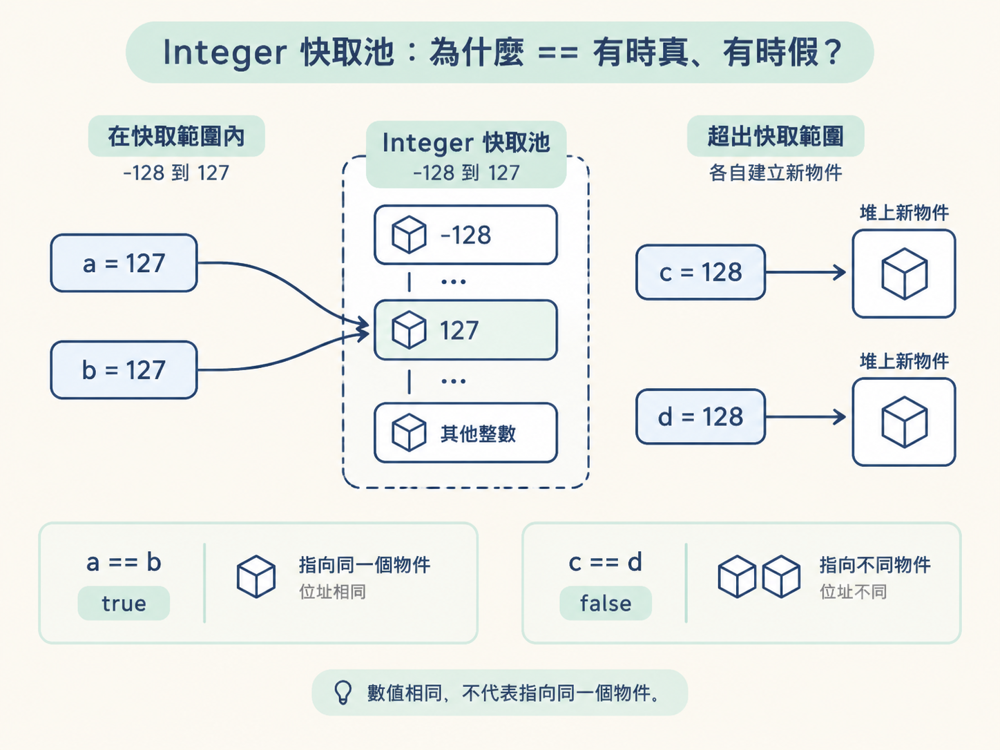
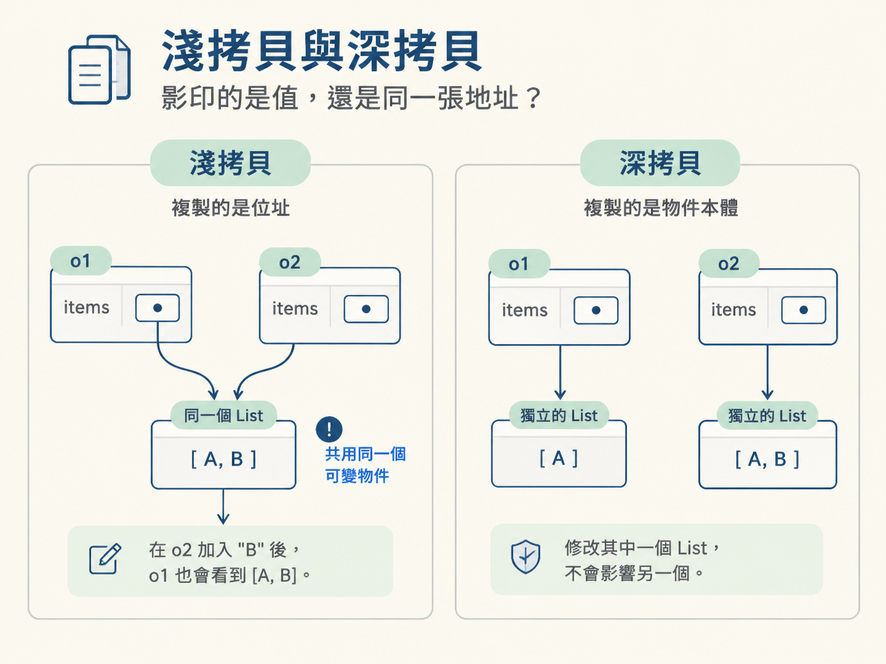

new：物件和變數不是同一件事看到 User u = new User("Amy");，不要把它當成「建立一個叫 u 的物件」。這行其實分成兩步：
new User("Amy") 在堆（heap）上建立物件、配置記憶體。u 是目前執行緒堆疊（stack）中的區域變數，裡面存的是指向該物件的位址。也就是說，u 比較像一張寫著地址的紙條，不是地址指向的那棟房子。

| 變數型別 | 變數裡裝什麼 | 例子 |
|---|---|---|
| 基本型別 | 真正的值 | int x = 10;，x 就是 10 |
| 引用型別 | 物件在堆上的位址 | User u = new User();，u 是位址 |
這個差異會一路影響後面的參數傳遞、== 比較，以及物件拷貝。如果把「變數」直接等同於「物件」，後面很容易一路判斷錯。
呼叫方法時，JVM 會替被呼叫的方法建立新的堆疊幀（stack frame），再把參數複製一份放進這個幀的區域變數表。方法拿到的是副本，不是呼叫端的那個變數本身。
差別只在於：基本型別複製的是數字或布林值；引用型別複製的是物件位址。因此 Java 從頭到尾都是值傳遞，只是引用型別傳遞的「值」剛好是一個位址。
class User {
String name;
User(String name) { this.name = name; }
void setName(String n) { this.name = n; }
}
static void rename(User u) {
u.setName("Bob"); // 照位址找到同一個物件，改到本尊
}
static void replace(User u) {
u = new User("Carol"); // 只改動副本的位址，本尊不受影響
}
User a = new User("Amy");
rename(a); // a.name 變成 Bob
replace(a); // a.name 仍然是 Bobrename 能改到原物件，是因為方法裡的 u 副本，仍然指向同一個物件。replace 則只是把方法內那張「地址紙條」改寫成 Carol 的新地址，呼叫端的 a 完全沒有換地址。

所以，「方法可以改到物件內容」不代表 Java 是引用傳遞。這裡其實是兩件事：
基本型別省記憶體、運算也直接。那為什麼還需要 Integer、Long、Boolean 這些包裝類？因為有些 Java 機制只接受物件。
第一個原因是集合與泛型。泛型在編譯後會被擦除，容器實際上是以 Object 的方式處理元素。List<Integer> 可以編譯，是因為 Integer 是物件；List<int> 則不行，因為基本型別不是物件，也沒有對應的父型別。
第二個原因是需要表達「沒有值」。例如資料庫查不到資料時，Integer 可以是 null；如果使用 int，就只能挑一個數字假裝代表「沒有資料」，原本的語意便消失了。
第三個原因是工具方法。像 Integer.parseInt、Long.toBinaryString、Double.compare，都放在對應的包裝類上。
代價也很直接：包裝類是真正的物件，會多出物件與記憶體的開銷。大量數值運算或對效能敏感的迴圈，通常應優先使用基本型別。
基本型別和包裝類之間的自動轉換，看起來像編譯器什麼都沒做，其實只是把方法呼叫藏起來了：
Integer i = 10; // 編譯後：Integer.valueOf(10)
int j = i; // 編譯後：i.intValue()這件事最常造成兩種問題。
Integer count = null;
int c = count; // 拆箱時呼叫 intValue()，直接 NullPointerExceptioncount 是 null，沒有任何物件可以呼叫 intValue()，所以在拆箱的那一刻就會拋出 NullPointerException。
Integer sum = 0;
for (int k = 0; k < 100000; k++) {
sum += k; // 每輪都拆箱再加、再加箱存回去
}每一輪的 sum += k 都要先拆箱、完成加法，再把結果裝箱回 Integer。短時間產生大量用完即丟的物件，會增加垃圾回收（GC）的負擔。這種場景通常改用 int sum 更合適。

== 有時真、有時假？來看一段容易讓人誤判的程式：
Integer a = 127, b = 127;
System.out.println(a == b); // true
Integer c = 128, d = 128;
System.out.println(c == d); // false關鍵在於自動裝箱會呼叫 Integer.valueOf。這個方法內部有一個 IntegerCache：
因此 a 和 b 指向同一個快取物件，== 比的是位址，所以結果是 true。c 和 d 則是兩個不同物件，位址不同，結果便是 false。

幾個細節要記住：
-XX:AutoBoxCacheMax 啟動參數調大。new Integer(100) 會建立新物件，不會使用快取。== 比較的是兩個引用是否指向同一個物件，不是數值是否相等。包裝類的數值比較應拆箱後比較，或使用 equals，不要把快取行為當成保證。
Object.clone() 預設做的是按欄位複製：把每個欄位的內容抄到新物件裡。
後者就是淺拷貝。
class Order implements Cloneable {
List<String> items = new ArrayList<>();
@Override
public Order clone() throws CloneNotSupportedException {
return (Order) super.clone();
}
}
Order o1 = new Order();
o1.items.add("A");
Order o2 = o1.clone();
o2.items.add("B");
System.out.println(o1.items); // [A, B]，兩份訂單共用同一個 Listo2.items 和 o1.items 指向同一個 List。所以看似只修改副本，原本的訂單也出現了 B。

如果希望兩份物件完全分開，就需要深拷貝，讓內部的可變物件也各自建立副本。常見方式有三種：
clone：結構簡單時可行，但遇到多層嵌套會很難維護。不過，不是所有欄位都需要深拷貝。如果欄位本身是不可變物件，共用它通常沒有問題；真正需要小心的是可變欄位。
變數裡存的值，和物件本身是兩回事。Java 方法收到的永遠是參數副本，因此 Java 只有值傳遞；引用型別只是把「物件位址」當成值傳進去。
包裝類讓基本型別能進入集合與泛型，也能表達 null，但會帶來物件開銷。裝箱與拆箱是編譯器補上的方法呼叫，可能造成 NullPointerException 和額外 GC 壓力。Integer 快取則提醒你：包裝類不要用 == 比數值。
最後，clone 預設是淺拷貝；只要物件裡有可變的引用型別，就要確認你要的是共用，還是必須做深拷貝。